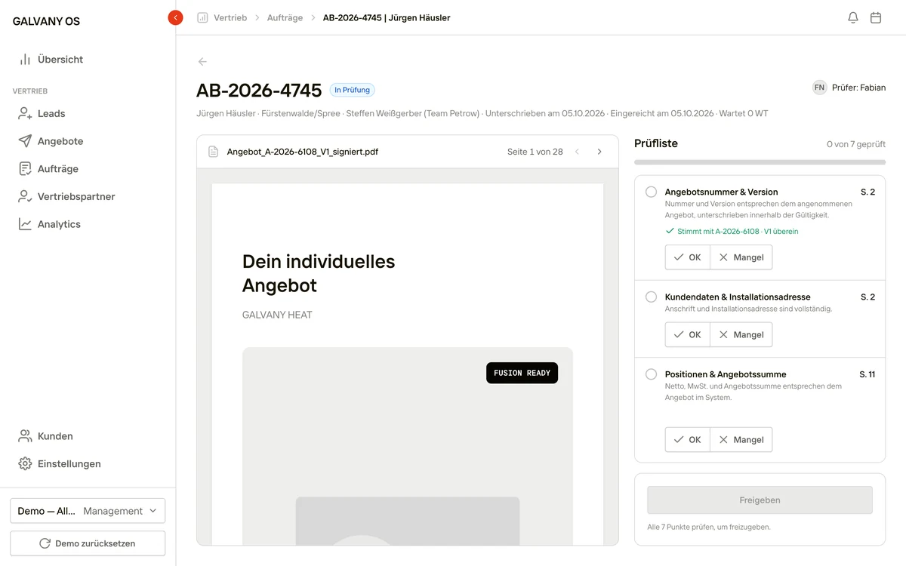

GALVANY is still being built: what you see are working prototypes, not the finished product. I show it first anyway. AI has changed my process drastically in the last year, and this project is a much better example of how I work and what I build right now than my other client cases. My side projects, Juno and Bandcamp, are made the same way.
Brief
GALVANY OS is our Airtable migration: sales, operations, finance, customer success and legal move out of Airtable into one agentic system. The Sales Portal is the part our sales partners work in, and every customer passes from one side to the other and back. I design all of it.
Airtable had grown along with the company. There were too many records and too many views, one for every role and use case. Some took more than a minute to load, and many were outdated and no longer used.
A lot of the work in those views was deterministic. Checking a signed offer took 10 to 15 minutes by hand, and 30 to 40% still went back to the seller. Finding out why an installation was stuck meant following up between departments, so one role, the order manager, mostly kept tabs on it all. Part of the brief was defining which of this work agents could take over, and which should stay with people.
10–15 min → 1–2 minTo check a signed offer
30–40% → 20–25%Offers rejected on first review
2 hours → 30 minTo plan an installation
15–20Interviews and user tests
Process
With a senior PM, I ran 15 to 20 interviews across the company: the head of sales, sales managers, sellers, detailed planners, operations and installer managers. Everyone got two rounds. The first was a discovery interview about their role, and I brought a first prototype for them to react to. After an iteration, the second round was a proper usability test.
I design straight into the code with Claude Code, on the design system I built, so what people tested was a clickable prototype on seeded data. The PM and I prioritised together, and I handed the work over to a team of four developers. The prototype is the spec they build from.
Outcome
What we can measure so far, from live use and user tests: checking a signed offer takes 1 to 2 minutes instead of 10 to 15. First-review rejections dropped from 30 to 40% to 20 to 25%. Detailed planning takes about 30 minutes per installation instead of 2 hours. The whole funnel, from lead to installation, is in one place instead of spread over many views.
My role
I’m responsible for all design at GALVANY, internal and external, and I hired and mentor a senior designer. On this project I defined which workflows could be automated, designed the OS and the Sales Portal, built the design system in code, and ran the research together with the PM.
Skills
Design systems
Design engineering
UX design
UI design
Prototyping
User research
Built with
Figma, Next.js, React, TypeScript, Tailwind, Claude Code
Our agentic pre-check evaluates every signed offer before a reviewer opens it: are all pages there, do the customer, the offer number and the products match, is every signature and consent in place. Each finding names its page. We could have let it approve clean offers on its own, but in the interviews and tests, reviewers didn’t feel comfortable giving AI full authority over the check. So a person stays in the loop: the reviewer takes each finding over with one click and decides what only a person can, like whether the heat pump fits the building. A check now takes 1 to 2 minutes instead of 10 to 15.

2/3
Sellers pick from options, instead of writing on the offer
Many rejections started before the review. Sellers used to write things on the offer themselves, like discounts and extra products, and not all of it belonged on a contract. In the Sales Portal, discounts and extras are built into the offer, and the logic that puts the offer together got better too. There’s less room to add things by hand, so there’s less to get wrong. Together with the pre-check, this brought first-review rejections down from 30 to 40% to 20 to 25%.
3/3
The status follows the customer, so nobody has to chase it
Nothing gets installed until four gates are clear: subsidy, detailed planning, financing and the electrics. Before, knowing where a customer stood took a lot of back and forth between departments. In the OS, every update moves its gate on the pipeline card, and the people who need it get told. GALVANY’s processes kept changing while we built it, so the OS had to make room for that: the electrics only became a gate later, and the card took it as a fourth circle.
What I learned
You can’t automate everything. Take too much away and people lose their say in their own work. They need to trust a new tool before they’ll adopt it. That’s why the pre-check still keeps a person in the loop. Once it has proven itself, we may move to a fully automated check.